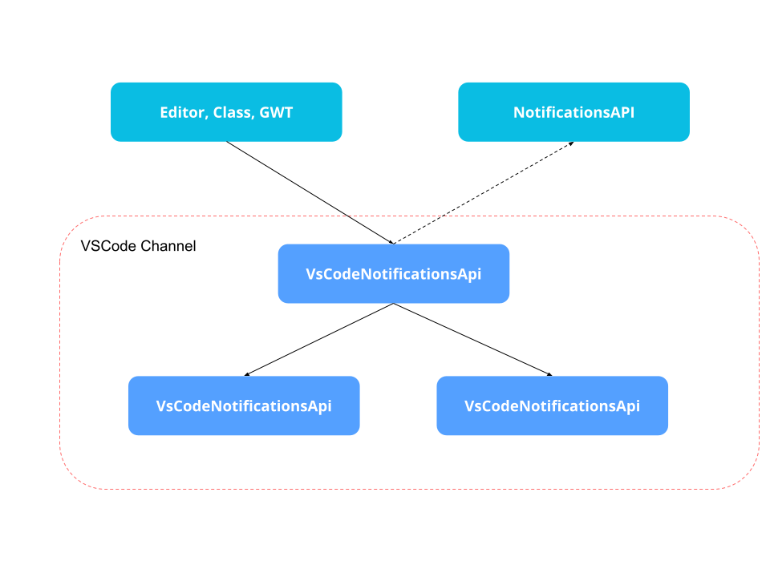

Kogito Notifications API

Kogito is not just the implementation of the next generation business automation technologies, but the tools that will support the development, testing, management, etc.
Replacing Business Central is not an easy task. 10+ years of development make this a challenging endeavor, but not impossible. So this time I bring you the new Notifications API.
This API is an abstraction layer that allows the users (in this case, the developers) to communicate transparently with the channels (i.e. VS Code, dmn.new, bpmn.new) and send notifications using a single endpoint API. Under the hood, each channel will have its own implementation redirecting or transforming those messages to their final form.

Main Components
The main interface is the NotificationsApi itself. Each channel should have its own implementation or a NoOpNotificationsApi will be used. It only contains three methods that will allow you to send those notifications to the channel.
VSCode Channel
Since this is the first implementation we have so far I will give a detailed explanation of our mechanism.
Notification is the main “transport” class. It will let you include all the information you need to send to the channel. The most important notification attribute is the path. It sets the group the notifications are going to belong to and also lets the channel open that file in case we decide it to. In case you want to express that notification for the main project I recommend using a project name instead of a path. In that situation, nothing will open in case you click on the Notification.
Type and Severity
Those two attributes help us to categorize the notifications. Let’s start with type. When you want to notify something there are usually two kinds of state: an ephemeral notification that just informs about a situation and that will be dismissed in a short period of time, or an always present notification that will only be dismissed once the root cause that originates is modified. For that, we modeled two different types: Problem and Alert.
Problems are used to show information I want to see all the time, like a validation problem, diagram not connected, a compilation error, an improvement hint. In VS Code, those notifications are going to appear in the Problems tab.
On the other hand, we have those ephemeral notifications: a success compilation or validation, to inform a process started or ended, etc. For that kind of situation, we have the Alert type. On VS Code, Those notifications are going to appear as popup/toast messages.
Once we define what type of Notification we got, we should define the Severity. This defines if the notification is an error, a warning, information, or success. There are going to be some severities that are not going to match with the selected type (like Hint). In that case they are going to be defaulted as INFO.
Usage
The NotificationAPI has a bidirectional implementation in Kogito. Users can send information to the Channel, or the Channel can ask for information to the Envelope.
Typescript
If you are in the Channel you can simply import that specific channel implementation and start using it.
import {VsCodeNotificationsApi} from "@kogito-tooling/notifications/vscode"Java
From Java you can inject the Notifications API using CDI like this:
| Notification notification = new Notification(); | |
| notification.setPath("src/main/resources/diagram.dmn"); | |
| notification.setMessage("The message I want to inform"); | |
| notifications.setType(NotificationType.PROBLEM); | |
| notification.setSeverity(NotificationSeverity.ERROR); | |
| this.notificationsApi.createNotification(notification); |
| import org.appformer.kogito.bridge.client.notifications.NotificationsApi; | |
| public class MyEditor{ | |
| private NotificationsApi notificationsApi; | |
| @Inject | |
| public MyEditor(NotificationsApi notificationsApi){ | |
| this.notificationsApi = notificationsApi; | |
| } | |
| } |
| String path = "src/main/resources/diagram.dmn"; | |
| this.notificationsApi.setNotifications(path,notifications); |
| export interface Notification { | |
| path: string; | |
| severity: NotificationSeverity; | |
| message: string; | |
| type: NotificationType; | |
| } |
| export interface NotificationsApi { | |
| createNotification(notification: Notification): void; | |
| setNotifications(path: string, notifications: Notification[]): void; | |
| removeNotifications(path: string): void; | |
| } |
| export type NotificationSeverity = "INFO" | "WARNING" | "ERROR" | "SUCCESS" | "HINT"; | |
| export type NotificationType = "PROBLEM" | "ALERT"; |
| import org.uberfire.lifecycle.Validate; | |
| … | |
| @Validate | |
| public Promise validate() { return Promise.resolve(listOfNotifications) } |
Editor Validation
I said before that Kogito has a bidirectional implementation and this was mainly done for editors. The main reason was to provide the Editor a way to validate their Diagrams without doing to every time it modifies its content. For that, we provide a validate() method for them that is executed every time the file is saved. The validation won’t prevent the file to be saved but it will show the created notifications in the Channel. If there is no validate method in the editors nothing will happen.
To implement the validation in your editor you just simply need to add the validation method like this. Just remember to add the @Validate annotation.
Next Steps
In the first iteration, we delivered this API and also the VS Code implementation. The support of this API in other channels is going to be added soon since we also need to design a proper UI and the mechanisms to open files or show different severities. In parallel, DMN, BPMN, SceSim, and PMML teams are also working on using this API for better validation, error, and message handling.
To sum up, I wanted to share with you a small video of a PoC we did to see this working in the VSCode, but still, with mock data. We made it to check how the results of our new API were.
Hopefully, we will soon see Kogito editors integrated with this API, and its extension to all channels (the first one will be dmn/bpmn.new). We really believe that this new Notification mechanism will help to expand the complete Business Automation developer authoring experience that our team is engaged to deliver.